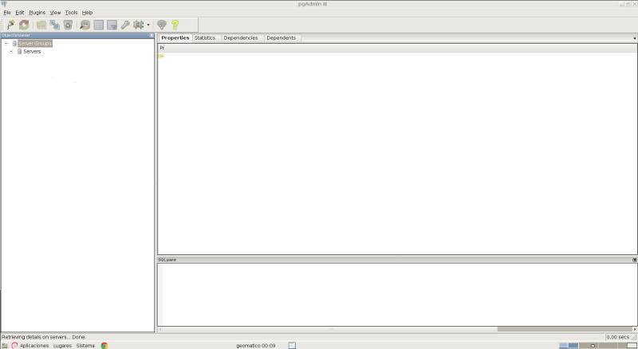
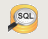

Instalación de PostgreSQL¶
Note
| Fecha | Autores |
|---|---|
| 1 Noviembre 2012 |
|
| 15 Octubre 2013 |
|
©2012 Micho García
Excepto donde quede reflejado de otra manera, la presente documentación se halla bajo licencia : Creative Commons (Creative Commons - Attribution - Share Alike: http://creativecommons.org/licenses/by-sa/3.0/deed.es)
En este tema procederemos a la instalación del software del sistema gestor de base de datos relacional PostgreSQL en su versión más reciente 9.1, así como distintas herramientas con las que poder interactuar con el sistema. Además aprenderemos conceptos básicos de administración y gestión del sistema. Conoceremos la estructura del sistema, su organización y diferentes conceptos respecto de esta que serán de utilidad en su entendimiento y manejo.
La instalación se realizará sobre los sistemas operativos Ubuntu, Windows y Mac OS X.
Introducción a PostgreSQL¶
PostgreSQL es un sistema de gestión de bases de datos objeto-relacional, distribuido bajo licencia BSD y con su código fuente disponible libremente. Es el sistema de gestión de bases de datos de código abierto más potente del mercado y en sus últimas versiones no tiene nada que envidiarle a otras bases de datos comerciales.
PostgreSQL utiliza un modelo cliente/servidor y usa multiprocesos en vez de multihilos para garantizar la estabilidad del sistema. Un fallo en uno de los procesos no afectará el resto y el sistema continuará funcionando.
Distinguiremos algunos de los componentes más interesantes de la arquitectura del sistema:
- Aplicación cliente: Esta es la aplicación cliente que utiliza PostgreSQL como administrador de bases de datos. La conexión puede ocurrir via TCP/IP ó sockets locales.
- Ficheros de configuracion: Los 3 ficheros principales de configuración utilizados por PostgreSQL, postgresql.conf, pg_hba.conf y pg_ident.conf
- Disco: Disco físico donde se almacenan los datos y toda la información necesaria para que PostgreSQL funcione
Características¶
La última serie de producción es la 9.1. Sus características técnicas la hacen una de las bases de datos más potentes y robustas del mercado. Su desarrollo comenzo hace más de 16 años, y durante este tiempo, estabilidad, potencia, robustez, facilidad de administración e implementación de estándares han sido las características que más se han tenido en cuenta durante su desarrollo. PostgreSQL funciona muy bien con grandes cantidades de datos y una alta concurrencia de usuarios accediendo a la vez a el sistema.
A continuación teneis algunas de las características más importantes y soportadas por PostgreSQL:
Generales
- Es una base de datos 100% ACID, Atomicidad, Consistencia, Aislamiento, Durabilidad
- Integridad referencial
- Tablespaces
- Copias de seguridad en caliente (Online/hot backups)
- Unicode
- Juegos de caracteres internacionales
- Regionalización por columna
- Multi-Version Concurrency Control (MVCC)
- Multiples métodos de autentificación
- Acceso encriptado via SSL
- Actualización in-situ integrada (pg_upgrade)
- Completa documentación
- Licencia BSD
- Disponible para Linux y UNIX en todas sus variantes (AIX, BSD, HP-UX, SGI IRIX, Mac OS X, Solaris, Tru64) y Windows 32/64bit.
Programación / Desarrollo
- Funciones/procedimientos almacenados (stored procedures) en numerosos lenguajes de programacion, entre otros PL/pgSQL (similar al PL/SQL de oracle), PL/Perl, PL/Python y PL/Tcl
- Bloques anónimos de código de procedimientos (sentencias DO)
- Numerosos tipos de datos y posibilidad de definir nuevos tipos. Además de los tipos estándares en cualquier base de datos, tenemos disponibles, entre otros, tipos geométricos, de direcciones de red, de cadenas binarias, UUID, XML, matrices, etc
- Soporta el almacenamiento de objetos binarios grandes (gráficos, videos, sonido, ...)
- APIs para programar en C/C++, Java, .Net, Perl, Python, Ruby, Tcl, ODBC, PHP, Lisp, Scheme, Qt y muchos otros.
SQL
- SQL92, SQL99, SQL2003, SQL2008
- Llaves primarias (primary keys) y foráneas (foreign keys)
- Check, Unique y Not null constraints
- Columnas auto-incrementales
- Indices compuestos, únicos, parciales y funcionales en cualquiera de los metodos de almacenamiento disponibles, B-tree, R-tree, hash ó GiST
- Sub-selects
- Consultas recursivas
- Joins
- Vistas (views)
- Disparadores (triggers) comunes, por columna, condicionales.
- Reglas (Rules)
- Herencia de tablas (Inheritance)
- Eventos LISTEN/NOTIFY
Instalación y configuración de PostgreSQL¶
Para instalar PostgreSQL utilizaremos los repositorios oficiales de nuestro sistema operativo Linux desde los cuales tendremos acceso al paquete oficial. Para ello abrimos una consola y:
$ sudo apt-get install postgresql-9.1
De esta manera tan sencilla, tendremos corriendo una instancia de PostgreSQL en nuestro servidor. Una instalación más personalizada es posible realizarla a través del código fuente de la aplicación, pero necesita un conocimiento básico de este proceso. Puede encontrarlo en la página oficial de PostgreSQL. Una vez instalado PostgreSQL procederemos a la configuración y puesta en marcha del entorno.
Configuración¶
Estructura de la instalación¶
La instalación de PostgreSQL genera la siguiente estructura de carpetas, que habrá que tener en cuenta para el manejo del servidor:
* /usr/lib/postgresql/9.1 -> ejecutables y librerías
* /usr/share/postgresql/9.1 -> archivos sql para creación estructura
* /usr/share/postgresql-common -> herramientas comunes para administración
* /var/lib/postgresql/9.1
* /etc/postgresql/9.1
* main
En esta última localización se encuentran los archivos necesarios para la configuración:
pg_hba.conf postgresql.conf
pg_hba.conf es el archivo de configuración de la autentificación de PostgreSQL postgresql.conf es el archivo de configuración de PostgreSQL
Configuración de los accesos al servidor¶
Lo primero es configurar el servidor para que acepte conexiones de red. Para ello modificaremos el archivo pg_hba.conf, archivo que se utiliza para definir los diferentes tipos de acceso de un usuario al cluster de la siguiente manera:
[Tipo de conexion][database][usuario][IP][Netmask][Tipo de autentificacion][opciones]
En el sistema puesto en marcha se accederá sólo con el usuario postgres por lo que es necesario que tenga acceso desde la máquina local para fines administrativos. La siguiente línea de pg_hba.conf permite que se acceda a todas las bases de datos (all) con el usuario postgres desde el propio servidor (local):
local all postgres ident
Durante el desarrollo incluimos una línea que también permite acceder a todas las bases de datos (primer all) desde máquinas remotas (host) a cualquier usuario (segundo all):
host all all 0.0.0.0/32 md5
La IP 0.0.0.0/32 indica que se aceptan conexiones de cualquier máquina, independientemente de su dirección IP. Aunque se acepten conexiones desde máquinas remotas, la autenticación se realiza por md5, lo que requiere conocer el password del usuario de la base de datos para conectar de manera efectiva.
Al finalizar los desarrollos se eliminará dicha línea, pudiendo dejar en su lugar una que permita sólo el acceso a los ordenadores de la red, es decir las IPs que comiencen por “192.168.0”:
host all postgres 192.168.0.0/32 md5
Lo cual permitirá conectar directamente con un cliente PostgreSQL, como pgAdmin3.
Una vez definida la regla de acceso a nuestro servidor, le indicaremos las interfaces en las que puede escuchar el servidor. Para ello modificaremos el parámetro listen_address en el archivo postgresql.conf de la siguiente manera:
listen_address = '*'
En los parámetros de seguridad, activaremos la encriptación de las claves de usuario modificando en el mismo archivo:
password_encryption = on
Clientes: psql y pgadmin3¶
psql¶
psql - PostgreSQL interactive terminal, es un frontend tipo terminal para la gestión de PostgreSQL. Permite ejecutar consultas interactivamente, ejecutandolos contra la instancia de PostgreSQL, y ver los resultados de estas consultas. Alternativamente también permite ejecutar estas consultas desde un archivo. Proveé además un número de comandos y varias facilidades para escribir scripts y automatizar una variedad de tareas.
El ejecutable se encuentra instalado en la ruta /usr/bin/psql, y se puede ejecutar desde una consola. Para ello lo primero que debemos hacer es entrar al sistema como un usuario con permisos para manejar la base de datos recien instalada.
Recién instalado PostgreSQL dispone unicamente del usuario postgres como superusuario con el que podremos realizar tareas de administración sobre la base de datos. Lo primero será modificar la clave de este usuario.
Primero lo haremos en el sistema, abrimos una terminal y tecleamos:
$ sudo passwd postgres
de esta manera el sistema nos preguntará la nueva clave de usuario. Una vez realizdo este paso, modificaremos la password de este usuario en la misma instancia de PostgreSQL. Para ello entramos en la consola psql con el usuario postgres:
$ su postgres
y con ese usuario:
$ psql
De esta manera entramos en la consola de PostgreSQL a través del usuario postgres desde donde modificaremos la contraseña del usuario:
postgres=# alter user postgres with password '<una_password>';
Existen diferentes opciones para el manejo de psql, se recomienda una lectura detenida de todos en la página oficial de PostgreSQL. Aquí mostraremos solo algunos de los más utilizados:
- psql nombre_base_datos o psql -d nombre_base_de_datos accederá a la base de datos que le indiquemos
- psql -f ruta_a_archivo utiliza las sentencias que se encuentren dentro del archivo
- psql -h nombre_servidor se conecta al servidor que le indiquemos
- psql -p puerto se conecta a la instancia de PostgreSQL a través del puerto indicado
- psql -l muestra un listado de las bases de datos de la instancia
- psql -U nombre_usuario se conecta usando el usuario indicado
- psql -V muestra la versión de psql
Las opciones se pueden pasar de manera encadenada, por ejemplo, para conectarse a una base de datos en un servidor mediante un usuario:
$ psql -U usuario -d basedatos -h servidor -p puerto
Una vez que accedemos al través de la consola psql, podremos comenzar a explorar el sistema. A continuación se detallan algunos de los comandos más usados que nos permiten extraer esta información:
* select version(); nos indicará la versión del servidor que tenemos instalada
* \l muestra un listado de las bases de datos
* select * from pg_user; nos muestra todos los usuarios del sistema
* select * from pg_tables; muestra todas las tablas incluidas las del sistema
* \c database cambia de base de datos
* \dn muestra todos los esquemas de la base de datos
* \dt muestra las tablas, acepta expresiones para filtrar por ejemplo, \dt p* todas las tablas que empiezan por p
* \du listado de usuarios/grupos y roles
* \d tabla columnas, y tipos de datos de la tabla
* \i ruta_archivo ejecuta las sentencias de un archivo
* \o ruta_archivo devuelve los datos a un archivo
* \conninfo muestra la información de la conexión
* \encoding codificación fija la codificación del sistema, o sin parámetro la muestra
* \q sale de la consola ``psql``
* \? ayuda
Mediante el manejo de los comandos DLL desde la consola psql podremos definir la estructura de la base de datos. Por ejemplo podremos crear bases de datos mediante:
postgres=# CREATE DATABASE midb;
Para una definición más extensa del uso de los comandos acudir a la referencia de PostgreSQL
Prácticas¶
Práctica 1¶
- Cree un usuario prueba en la tabla de usuarios
- Asigne password pru3ba al usuario
- Asigne permisos de superusuario a prueba
- Cree una base de datos midb en el esquema anterior usando como plantilla template1
- Cree un esquema curso
- Asigne todos los permisos al esquema curso para el usuario alumno
- Cargue desde el archivo parques_naturales.sql la información en la base de datos recien creada
pgAdmin¶
pgAdmin es el más popular software para la administración de PostgreSQL a través de entorno gráfico. Se puede utilizar para el manejo de las versiones de PostgreSQL 7.3 en adelante. Soporta todas las funcionalidades de PostgreSQL y permite una administración más sencilla de este. Incluye un editor de SQL desde el que se pueden realizar las consultas.
Para instalar pgAdmin en nuestros equipos simplemente desde una consola introduciremos:
$ sudo apt-get install pgadmin3
Una vez instalado podremos arrancarlo desde el menú de aplicaciones -> Desarrollo -> pgAdmin III

Ahora necesitaremos conectar con nuestra instancia de PostgreSQL, para ello pulsamos sobre el botón Add a connection to a server:

Aparecerá una interfaz donde introduciremos los datos de conexión:

Introduciendo los datos necesarios accederemos al servidor, y podremos visualizar los esquemas, bases de datos, Tablespaces, usuarios y demás. Si vamos al editor de SQL podremos ejecutar consultas sobre nuestra base de datos:

Prácticas¶
Práctica 1¶
- Arranque pgAdmin III y conectese al servidor instalado en su equipo utilizando el usuario prueba creado en la práctica anterior
- Abra la base de datos midb y compruebe que se ha creado correctamente
- Averigue la estructura de la base de datos midb
- Compruebe el tipo de dato de la columna XXXXXXXXXXXXX
- Añada una columna de tipo XXXXXXXXXX a la tabla XXXXXXXXXX
Referencias¶
Installing PostGIS 2.0 on Ubuntu [EN] http://linfiniti.com/2012/05/installing-postgis-2-0-on-ubuntu/
Instalar PostGIS 2.0 en Ubuntu Server 12.04 de 32 bits [EN] http://proyectosbeta.net/2012/08/instalar-postgis-2-0-en-ubuntu-server-12-04-de-32-bits/
pgModeller [EN] http://pgmodeler.com.br/
PostgreSQL 9.1.6 Documentation [EN] http://www.postgresql.org/docs/9.1/interactive/index.html
PosgreSQL-es http://www.postgresql.org.es/
Configuración básica de PostgreSQL http://www.postgresql.org.es/node/219
psql [EN] http://www.postgresql.org/docs/9.1/static/app-psql.html
pgAdmin III [EN] http://www.pgadmin.org/